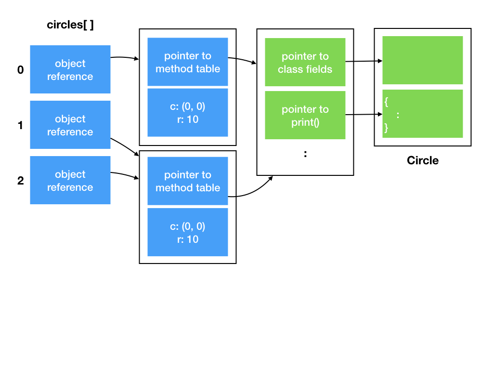

Lecture 2: Inheritance & Polymorphism
Learning Objectives
After this lecture, students should:
- understand that Java is a type-safe language, in contrast to C
- be familiar with Java variable and primitive types
- understand the concepts of object-oriented programming, including interface, polymorphism, late binding, inheritance, method overriding and method overloading, and their purposes of introducing them as a method of programming.
- know the purpose and usage of Java keywords
implements,extends,super,instanceof, and@Override - understand Java concepts of arrays, enhanced
forloop, method signature,Objectclass, and object equality.
Type Safety
Recall that the type of a variable tells the compiler how to interpret the bits that represent the value of a variable and how to manipulate the variable. The compiler also uses the type to decide how much memory is allocated for each variable.
Some languages are stricter in terms of type "compatibility" than others. C compilers, however, are not very strict. If it detects something strange with the type you used, it will issue a warning, but still let your code compiles and run.
Take:
1 2 3 4 5 | #include <stdio.h> int main() { printf("%d\n", "cs2030"); } |
In Line 4, we treat the address to a string as integer. This generates a compiler's warning.
In C, you can type cast a variable from one type into another, i.e., force the compiler to treat a variable of one type as another type. The compiler would listen and do that for you. The following code would print out gibberish and would compile perfectly without error.
1 2 3 4 5 | #include <stdio.h> int main() { printf("%d\n", (int)"cs2030"); } |
Such flexibility and loose rules for type compatibility could be useful, if you know what you are doing, but for most programmers, it could be a major source of unintentional bugs, especially if one does not pay attention to compiler's warning or one forces the warning to go away without fully understanding what is going on.
Java is very strict when it comes to type checking, and is one of the type-safe languages. Java ensures that basic operations (such as +, -, etc) and method calls apply to values in a way that makes sense. If you try to pull the same trick as above, you will receive an error:
Java Primitive Data Types
Java supports eight primitive data types: byte, short, int, long, float, double, boolean and char. If you are familiar with C, these data types should not be foreign to you. One important difference is that a char variable stores a 16-bit Unicode character, not an 8-bit character like in C. Java uses byte for that. The other notable difference is that Java defines true and false as possible value to a boolean, unlike C which uses 0 for false and non-0 for true.
You can read all about Java variables and primitive data types in Oracle's Java Tutorial.
Enforcing Abstraction Barrier with Interface
Recall the concept of encapsulation. When we develop a large piece of software, it is important to hide the details about data representation and implementation, and only exposes certain public methods for the users to use. We imagine that there is an abstraction barrier between the code that implements the internals of a class (called the implementer) and the code that uses the class (called the user) to achieve a higher level task.
We have seen that we use private to enforce data hiding -- to hide certain fields and methods from outside of the barrier. Now, we are going to see how we enforce that the right set of methods are defined, implemented, and used on both sides of the barrier.
The mechanism to do this is through defining an interface (aka a protocol as it is called in Objective-C or Swift). An interface is kinda like a contract between the implementer of a class and the user of a class. If a class promises to implement an interface, then we are guaranteed that the methods defined in the interface are implemented in the class as it is promised. Otherwise, the code would not compile.
In Java, we can define an interface using interface keyword:
1 2 3 4 5 | interface GeometricShape { public double getArea(); public double getPerimeter(); public boolean contains(Point p); } |
The example interface GeometricShape above contains only the declaration of the methods, not the implementation.
Now, let's see how the implementer would implement a class using the interface.
1 2 3 4 5 6 7 8 9 10 11 12 13 14 15 16 17 18 19 20 21 22 23 24 25 26 27 28 29 | import java.lang.Math; class Circle implements GeometricShape { private Point center; private double radius; public Circle(Point initCenter, double initR) { center = initCenter; radius = initR; } void moveTo(Point p) { center = p; } @Override public double getArea() { return Math.PI*radius*radius; } @Override public boolean contains(Point p) { return (p.distance(center) < radius); } @Override public double getPerimeter() { return Math.PI*2*radius; } } |
This is very similar to the code you saw in Lecture 1 and Exercise 1, except that in Line 2, we say that class Circle implements GeometricShape. This line informs the compiler that the programmer intends to implement all the methods included in the interface GeometricShape exactly as declared (in terms of names, the number of arguments, the types of arguments, returned type, and access modifier). The rest of the class is the same, except that we renamed getCircumference with getPerimeter, which is more general and apply to all shapes. You will also see that we added annotations to our code by adding the line @Override before methods in Circle that implements the methods declared in GeometricShape. This annotation is optional, but it informs our intention to the compiler and helps make the intention of the programmer clearer to others who read the code.
Java Annotation
Annotations are metadata we add that is not part of the code. Annotation does not affect execution. They are useful to compilers and other software tools, as well as humans who read the code. While we can similarly make the code more human-friendly with comments, an annotation is structured and so can be easily parsed by software. @Override is probably going to be the only annotation useful for us in this class.
Note that we can have other methods (such as moveTo) in the class beyond what is promised in the interface the class implements.
A class can implement more than one interfaces. For instance, let's say that we have another interface called Printable[^1] with a single method defined:
1 2 3 | interface Printable { public void print(); } |
The implementer of Circle wants to inform the users that the method void print() is implemented, it can do the following:
1 2 3 4 5 6 7 8 9 10 | class Circle implements GeometricShape, Printable { : : @Override public void print() { System.out.printf("radius: %f\n", radius); System.out.printf("center:"); center.print(); } } |
In the above, we call print() on the Point object as well. How do we know that Point provides a print() method? Well, we can read the implementation code of Point, or we can agree with the implementer of Point that Point provides a Printable interface!
It is important to know that, interface provides a syntactic contract on the abstraction barrier, but it does not provide a semantic contract. It does not, for instance, guarantee that print() actually prints something to the screen. One could still implement interface Printable as follows:
1 2 3 4 5 6 7 | class Circle implements GeometricShape, Printable { : : @Override public void print() { } } |
and the code still compiles!
Not all programming languages that support classes support interface. Javascript and Python, for instance, does not support similar concepts.
Interface as Types
In Java, an interface is a type. What this means is that:
- We can declare a variable with an interface type, such as:
or1
GeometricShape circle;
We cannot, however, instantiate an object from an interface since an interface is a "template", an "abstraction", and does not have an implementation. For instance:1
Printable circle;
1 2 3 4 | // this is not OK Printable p = new Printable(); // this is OK Printable circle = new Circle(new Point(0, 0), 10); |
-
Similarly, we can pass arguments of an interface type into a method, and the return type of a method can be an interface.
-
An object can be an instance of multiple types. Recall that Java is a statically typed language. We associate a type with a variable. We can assign a variable to an object if the object is an instance of the type of the variable. Line 4 above, for instance, creates a new circle, which is an instance of three types:
Circle,GeometricShape, andPrintable. It is ok to assign this new circle to a variable of typePrintable.
We can now do something cool like this:
1 2 3 4 5 6 7 | Printable[] objectsToPrint; : // initialize array objectsToPrint : for (Printable obj: objectsToPrint) { obj.print(); } |
Let's look at this code in more details. Line 1 declares an array of objects of type Printable. We skip over the code to initialize the content of the array for now, and
jump to Line 5-7, which is a for loop. Line 5 declares a loop variable obj of type Printable and loops through all objects in the array objectsToPrint, and Line 6 invoke the method print of obj.
Array and For Loops in Java
See Oracle's tutorial on array and enhanced loop
The magic happens in Line 6:
- First, since we now that any object in the array has the type
Printable, this means that they must implement thePrintableinterface and support the methodprint(). - Second, we do not know, and we do not need to know which class an object is an instance of.
- Third, we can actually have objects of completely unrelated classes in the same array. We can have objects of type
Circle, and objects of typePoint. We can have objects of typeFactory, or objects of typeStudent, or objects of typeCushion. As long as the objects implement thePrintableinterface, we can put them into the same array. - Forth, at run time, Java looks at
obj, and determines its class, and invoke the right implementation ofprint()corresponding to theobj. That is, ifobjis an instance of a classCircle, then it will callprint()method ofCircle; ifobjis an instance of a classPoint, then it will callprint()method ofPoint, and so on.
To further appreciate the magic that happens in Line 6, especially the last point above, consider how function call is done in C. In C, you cannot have two functions of the same name within the same scope, so if you call a function print(), you know exactly which set of instructions will be called1. So, the name print is bound to the corresponding set of instructions at compilation time. This is called static binding or early binding.
To have print() for different types, we need to name them differently to avoid naming conflicts: e.g., print_point(), print_circle().
In a language with static binding, suppose you want to mix objects of different types together in an array, you need to do something like the following pseudocode:
1 2 3 4 5 6 7 8 9 | for each object in the array if object is a point print_point(object) else if object is a circle print_circle(object) else if object is a square print_square(object) : : |
Not only is the code verbose and ugly, if you want to define a new compound data type that supports printing, you need to remember to come to this place and add in a new condition and call the corresponding print function.
In OO languages, you can have methods named print() implemented differently in different classes. When we compile the code above, the compiler will have no way to know which implementation will be called. The bindings of print() to the actual set of instructions will only be done at run time, after obj is instantiated from a class. This is known as dynamic binding, or late binding, or dynamic dispatch.

If you understand how an object is represented internally, this is not so magical after all. Referring to the figure above, the array objectsToPrint[] contains an array of references to objects, the first one is a Circle object, and the next two are Point objects. When obj.print() is invoked, Java refers to the method table, which points to either the method table for Circle or for Point, based on the class the object is an instance of.
This behavior, which is common to OO programming languages, is known as polymorphism2.
DRY - Don't Repeat Yourself
With the interface GeometricShape, we can implement other classes, such as Rectangle, Square, Polygon with the same interface. For instance,
1 2 3 | class Square implements GeometricShape, Printable { // left as exercise (See Exercise 2) } |
So far, we have been treating our shapes as pure geometric objects. Let's consider an application where we want to paint the shapes. Each shape should have a fill color and a border (with color and thickness).
1 2 3 4 5 6 7 8 9 10 11 12 13 14 15 16 17 18 19 20 21 22 23 | import java.awt.Color; : class PaintedCircle implements GeometricShape, Printable { private Color fillColor; private Color borderColor; private double borderThickness; public void fillWith(Color c) { fillColor = c; } public void setBorderThickness(double t) { borderThickness = t; } public void setBorderColor(Color c) { borderColor = c; } // other methods and fields for Circle from before } |
In the code above, we added the line import java.awt.Color to use the Color class that Java provides, and added three private members as well as their setters.
We can do the same for Square
1 2 3 4 5 6 7 8 9 10 11 12 13 14 15 16 17 18 19 20 21 22 23 | import java.awt.Color; : class PaintedSquare implements GeometricShape, Printable { private Color fillColor; private Color borderColor; private double borderThickness; public void fillWith(Color c) { fillColor = c; } public void setBorderThickness(double t) { borderThickness = t; } public void setBorderColor(Color c) { borderColor = c; } // other methods and fields written for Square } |
and for other shapes.
Great! We now have colorful shapes. The code above, however, is not good code, even though it is correct. Consider what would need to be done if say, we decided to support border styles (dotted border, solid border, dashed border, etc). We would have to edit every single class that supports colors and borders.!
One principle that we can follow is the abstraction principle, which says "Each significant piece of functionality in a program should be implemented in just one place in the source code. Where similar functions are carried out by distinct pieces of code, it is generally beneficial to combine them into one by abstracting out the varying parts."3
Following the principle, we want to implement these style-related fields and methods in just one place. But where?
Inheritance
The OO-way to do this is to create a parent class, and put all common fields and methods into the parent. A parent class is defined just like a normal class. For instance:
1 2 3 4 5 6 7 8 9 10 11 12 13 14 15 16 17 18 19 20 21 22 23 | class PaintedShape { private Color fillColor; private Color borderColor; private double borderThickness; public PaintedShape(Color initFillColor, Color initBorderColor, double initBorderThickness) { fillColor = initFillColor; borderColor = initBorderColor; borderThickness = initBorderThickness; } public void fillWith(Color c) { fillColor = c; } public void setBorderThickness(double t) { borderThickness = t; } public void setBorderColor(Color c) { borderColor = c; } } |
The PaintedCircle class, PaintedSquare class, etc, can now inherits non-private fields and methods from the parent class, using the extends keyword.
1 2 3 4 5 6 7 | class PaintedCircle extends PaintedShape implements GeometricShape, Printable { : } class PaintedSquare extends PaintedShape implements GeometricShape, Printable { : } |
This mechanism for a class to inherit the properties and behavior from a parent is called Inheritance, and is the forth and final basic OO principles we cover4.
With inheritance, we do not have to repeat the declaration of fields fillColor, borderColor, borderThickness and the associated methods in them. This software engineering principle is also known as the DRY principle -- "don't repeat yourself" principle. We are going to see DRY again and again in future lectures.
We also call the PaintedShape the superclass (or base class) of PaintedCircle and PaintedSquare, and call PaintedCircle and PaintedSquare the subclass (or derived class)5 of PaintedShape.
A PaintedCircle object can now call fillWith() even if the method fillWith() is not defined in PaintedCircle -- it is defined in PaintedCircle's parent PaintedShape.
Now consider the constructor for PaintedCircle. We need to initialize the geometric shape as well as the painting style. But, we define the fields fillColor, etc private, and subclasses have no access to private fields in the parent. We need to call the constructor of the parent to initialize these private fields. The way to do this is to use the super keyword, like such:
1 2 3 4 5 | public PaintedCircle(Point initCenter, double initRadius, Color initFillColor, Color initBorderColor, double initBorderThickness) { super(initFillColor, initBorderColor, initBorderThickness); c = initCenter; r = initRadius; } |
You can see that the constructor for PaintedCircle now takes in five parameters. You can imagine that as the class get more sophisticated with more fields, we need to pass in more parameters to the class to initialize the fields. It is not uncommon to provide alternative constructors with fewer parameters and assign some default values to the fields.
1 2 3 4 5 6 7 8 9 10 11 12 13 | // create circle with default style (white with black border of thickness 1) public PaintedCircle(Point initCenter, double initRadius) { super(Color.WHITE, Color.BLACK, 1.0); c = initCenter; r = initRadius; } // create circle with customized styles public PaintedCircle(Point initCenter, double initRadius, Color initFillColor, Color initBorderColor, double initBorderThickness) { super(initFillColor, initBorderColor, initBorderThickness); c = initCenter; r = initRadius; } |
Two methods in a class can have the same name and still co-exist peacefully together. This is called overloading. When a method is called, we look at the signature of the method, which consists of (i) the name of the method, (ii) the number, order, and type of the arguments, to determine which method is called. To be precise, the first sentence of this paragraph should read: Two methods in a class can have the same name and still co-exist peacefully together, as long as they have different signatures. Note that the return type is not part of the method signature, so you cannot have two methods with the same name and same arguments but different return type.
Even though the example above shows overloading of the constructor, we can overload other methods as well.
Java Object class
In Java, every class inherits from the class Object implicitly. The Object class defines many useful methods that are common to all objects. The two useful ones are :
equals(Object obj), which checks if two objects are equal to each other, andtoString(), which returns a string representation of the object, and is a better way to print an object than theprint()method andPrintableinterface we write6.
The equals() method as implemented in Object, only compares if two object references refer to the same object In the Figure below, we show an array circles with three Circle objects. All three circles are centered at (0, 0) with radius 10. They are created as follows:
1 2 3 4 | Circle[] circles = new Circle[3]; circles[0] = new Circle(new Point(0, 0), 10); circles[1] = new Circle(new Point(0, 0), 10); circles[2] = circles[1]; |
When you check circles[0].equals(circles[1]), however, it returns false, because even though circles[0] and circles[1] are semantically the same, they refer to the two different objects. Calling circles[1].equals(circles[2]) returns true, as they are referring to the same object.

What if you need a method that compares if two circles are semantically the same? You can implement your own method, say isTheSameCircle(Circle c). But, the equals() method is universal (all classes inherits this method) and is used by other classes for equality tests. So, in most cases, we can implement a method called equals() with the same signature with the semantic that we want7.
That's right. Even though we cannot have two methods with the same signature in the same class, we can have two methods with the same signature, one in the superclass (or the superclass's superclass, and so on), one in the subclass. The method in the subclass will override the method in the superclass. For example,
1 2 3 4 5 6 7 8 9 10 11 | class Circle implements Shape, Printable { : @Override public boolean equals(Object obj) { if (obj instanceof Circle) { Circle circle = (Circle) obj; return (circle.center.equals(center) && circle.radius == radius); } else return false; } } |
Line 7 above compares if the two center points are equals, and the two radius values are equals. So, we compare if the two circles are semantically the same. The rest of this code requires some explanation:
- Line 3 uses the same
@Overrideannotation that we have seen before -- we are telling the compilers that we are overriding a method in the superclass. - Line 4 declares the method
equals, and note that it has to have exactly the same signature as theequals()method we are overriding. Even though we meant to compare twoCircleobjects, we cannot declare it aspublic boolean equals(Circle circle), since the signature is different and the compiler would complain. - Since
objis of anObjecttype, we can actually pass in any object to compare with aCircle. Line 5 checks if the comparison makes sense, by checking ifobjis instantiated from aCircleclass, using theinstanceofkeyword. Ifobjis not even aCircleobject, then we simply returnfalse. - If
objis an instance ofCircle, we assignobjto a variable of typeCircle, and compare as in Line 7.
For the code above to work, we have to override the equals method of Point as well. That is left as an exercise.
One final note: polymorphism works here as well. If we have an object reference obj of type Object that refers to an instance of a Circle, calling obj.equals() will invoke the equals() method of Circle, not Object, just like the case of interfaces.
-
Remember a function is just an abstraction over a set of instructions. ↩
-
In biology, polymorphism means that an organism can have many different forms. ↩
-
This principle is formulated by Benjamin C. Pierce in his book Types and Programming Languages. ↩
-
The other three is encapsulation, abstraction, and polymorphism. ↩
-
Again, you see that computer scientist can be quite indecisive when it comes to the terminologies in OOP. ↩
-
We leave this for another lesson on another day. ↩
-
If you override
equals()you should generally overridehashCode()as well, but let's leave that for another lesson on another day. ↩